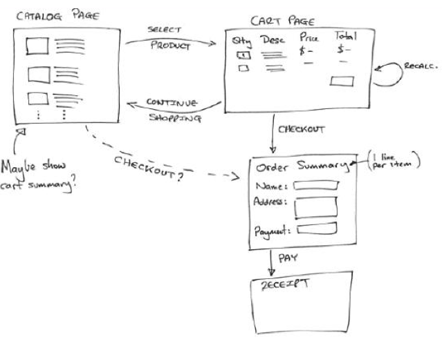
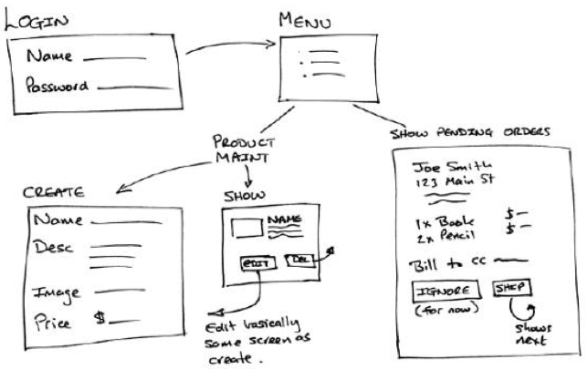
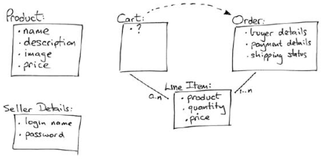

开发目标：需求分析和设计¶
Depot 是《Agile Web Development with Rails》中的一个购物车应用。该书中用多次迭代的方法，逐步实现购物车应用，使很多人走上了 Rails 开发的道路。遗憾的是Django世界中好像没有类似的指引，也许是因为 Pythoner 不需要具体的例子。但是如果通过这样一个例子能够让更多的人加入 Pythoner 的队伍，也是一大幸事。
本文首先回顾一下 depot 的需求，在后续内容中将会按照《Agile Web Development with Rails》中的迭代进度，逐步用 Django 实现 depot 购物车应用。在原例子的基础上，还会增加一些新的内容，以适应企业级应用的开发。同时，会尽量展示敏捷开发的特性。
原书中，初始阶段的需求整理如下：
角色
买方、卖方
用例
- 买方：浏览产品，创建订单
- 卖方：管理产品，处理订单，管理发货
界面设计
买方界面包括：
- 目录页：可以选择一个产品，选中产品会打开购物车页，同时该产品被加入购物车
- 购物车页：显示所有已选择的产品，可以返回分类页，也可以进入支付页进行支付
- 订单页：填写一些要素信息，确认支付后显示收据页
- 收据页：通知买方订单已被接收
买方界面流程如下图所示：
卖方界面包括：
- 登录页：卖方要登录后才能使用系统，登录后通过菜单选择其要使用的功能
- 菜单页：选择维护产品或者查看订单
- 创建产品页：用于加入新的产品
- 产品信息页：显示已经加入的产品，可以进行修改或者删除
- 订单页：显示订单信息，可以忽略或者处理
卖方界面流程如下图所示：

领域模型
从界面设计中可以很容易得出初步的模型，如下图：

以上，就是开始阶段所能得到的“需求”。尽管其中还有一些不确定的因素，但是敏捷方法认为应该尽快开始开发，这些不确定的因素会在后续的迭代过程中逐步明确。
接下来，就可以开始第一轮迭代开发了。